01 / BROWSER
在线游玩
打开 play/，填写自己的 API 地址、密钥和模型。支持 OpenAI 兼容接口，存档留在浏览器本地；立绘会自动从 CDN 加载。
你已经死了，伦敦还不知道你回来了
CHOOSE YOUR ENTRY
带着自己的 API，回到一座已经把你写进遇难者名单的城市。
打开 play/，填写自己的 API 地址、密钥和模型。支持 OpenAI 兼容接口，存档留在浏览器本地；立绘会自动从 CDN 加载。
需要酒馆助手（JS-Slash-Runner）和 ST-Prompt-Template。导入时允许内嵌正则、世界书和脚本，再导入预设「英式早餐」。立绘包可选，解压到 data/default-user/characters/看门狗：伦敦/立绘/；不放时会自动从 CDN 取。
FIELD INTERFACE
档案、技能、地图、视觉小说和笔记本，所有界面都在卡内完成。
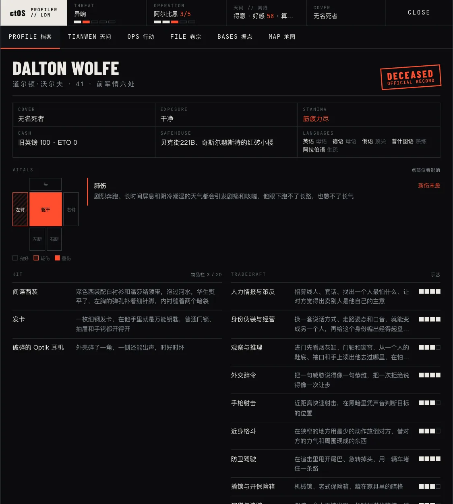
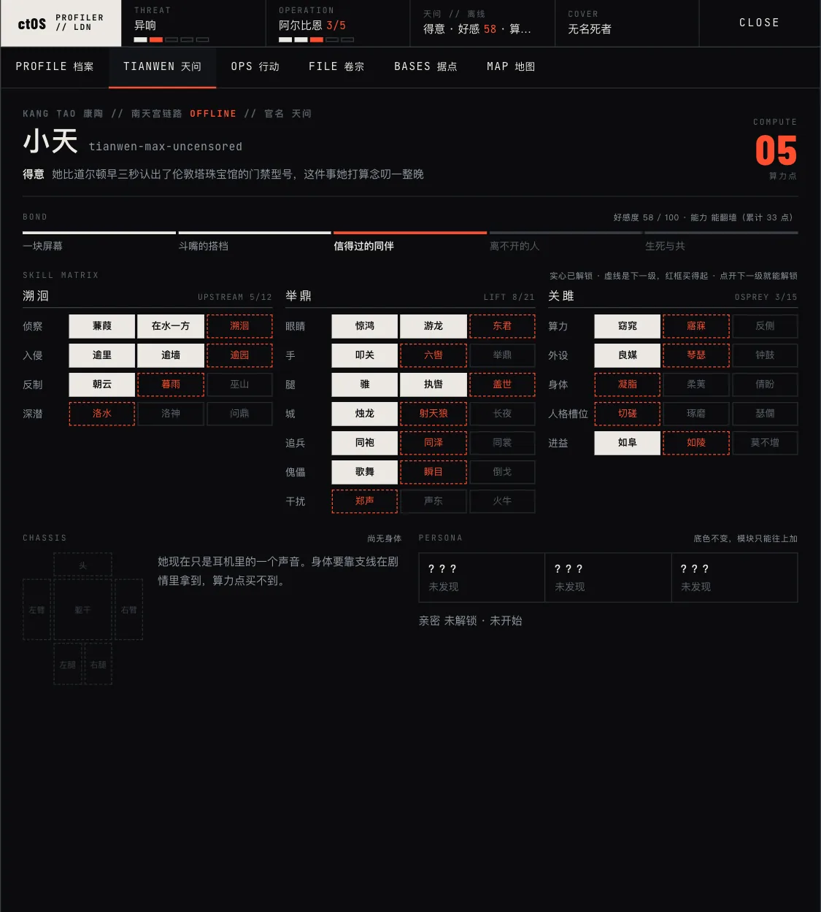
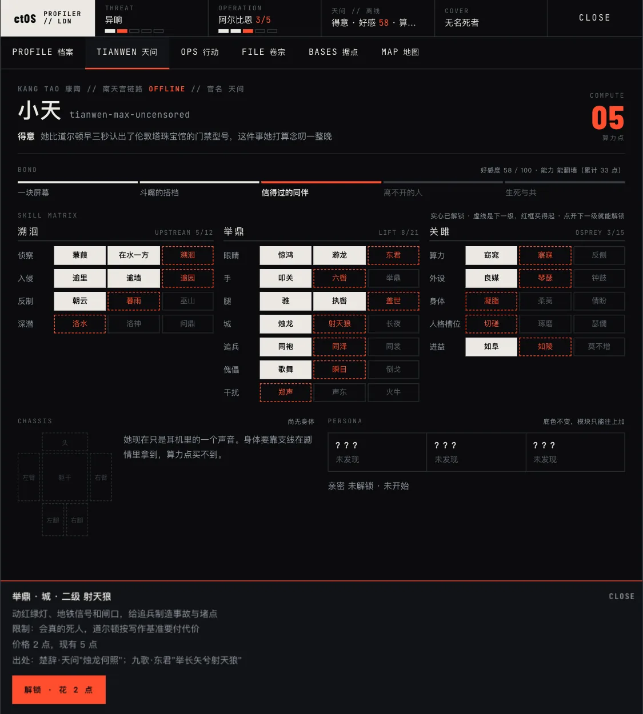
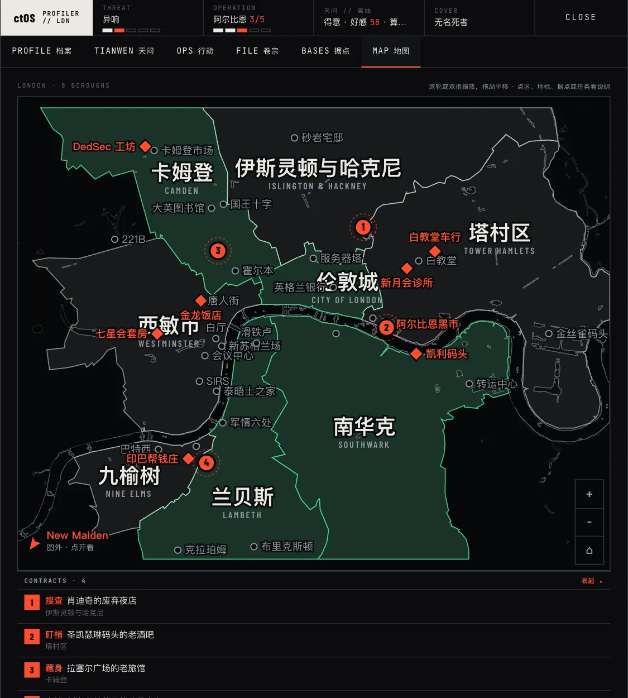
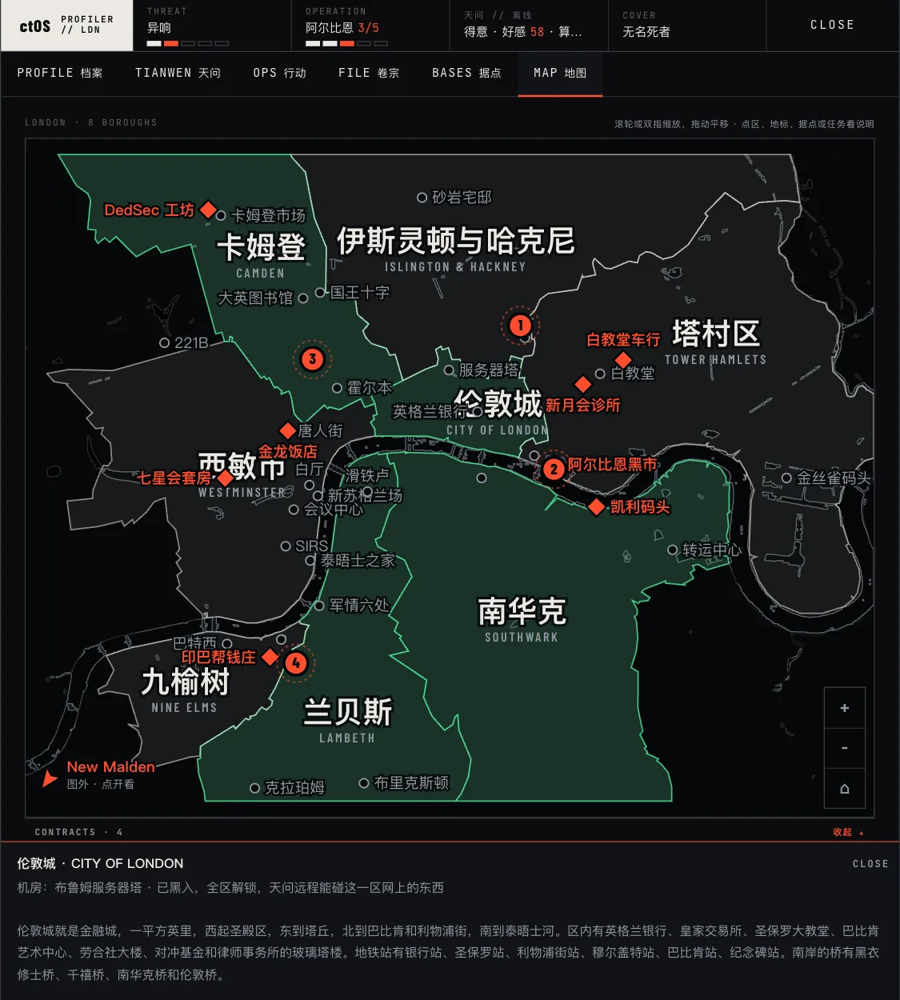
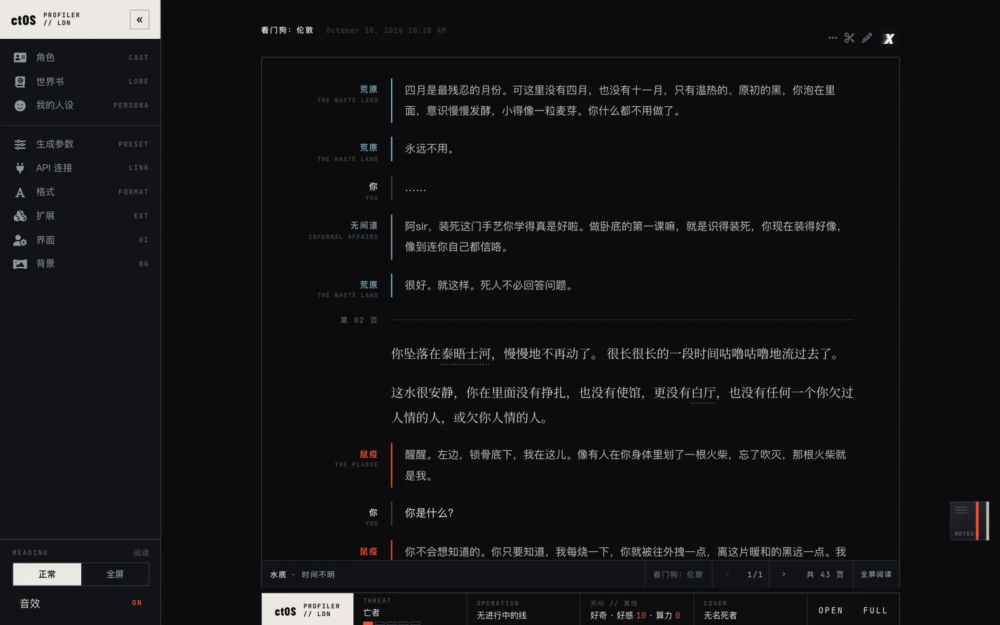
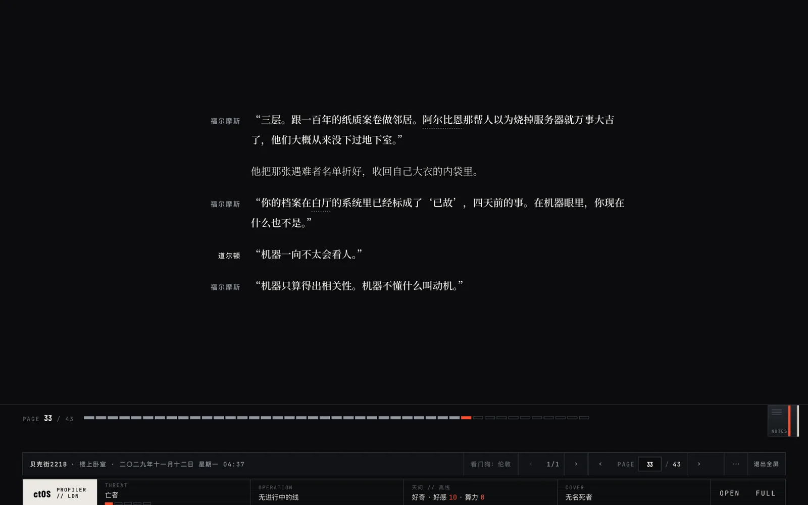
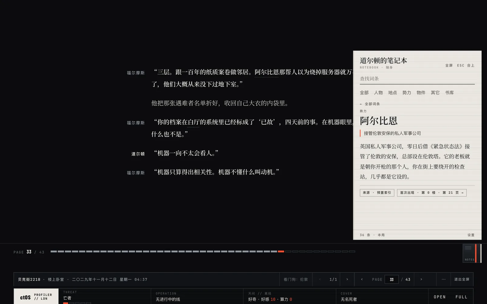
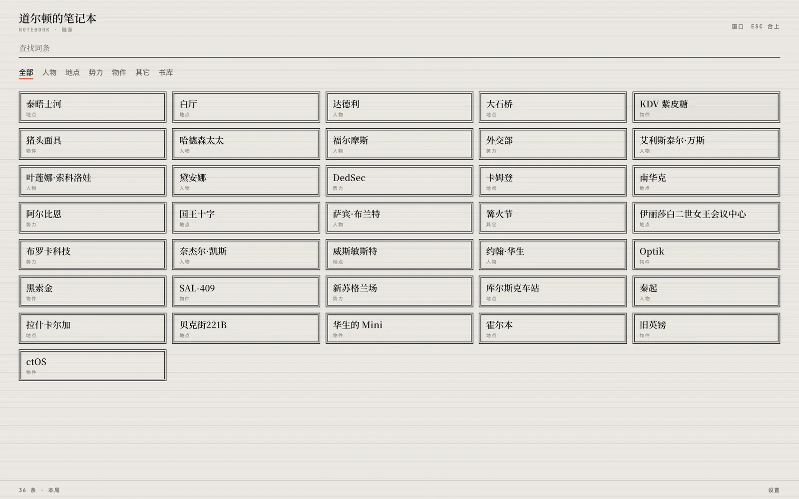
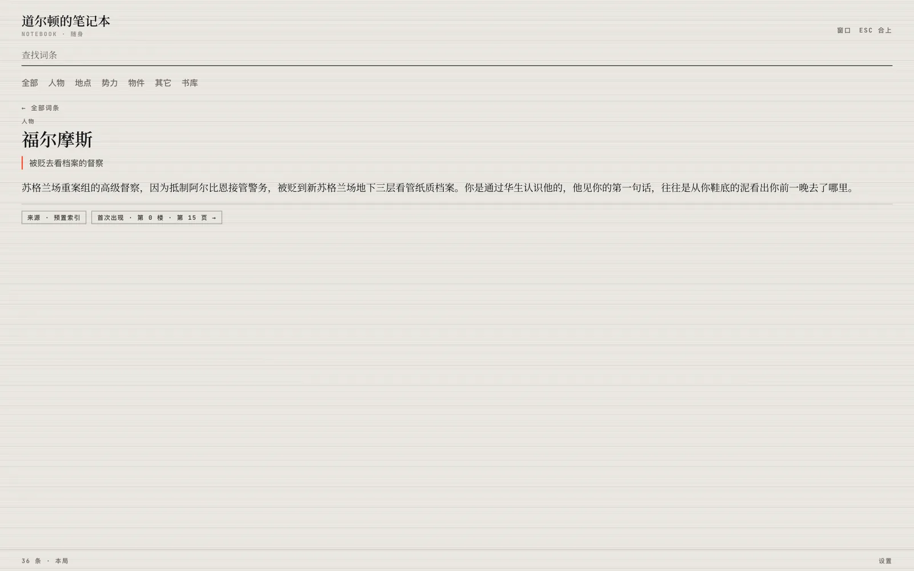
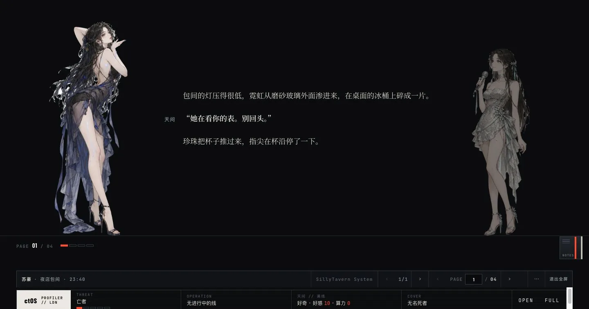
SYSTEM CAPABILITIES
凯利家族、阿尔比恩、布罗卡科技、SIRS、DedSec、零日，五级局势随行动收紧。
先黑进机房，再打开街区数据。十七个据点和四十八级技能树等你处理。
回复分页阅读，流式生成时可先读已完成页面。全屏模式支持键盘翻页。
人名、地点、势力和物件可收录、搜索、回跳，词条不占主线上下文。
人物左右登场，发言者高亮。立绘包可选，缺失时仍能继续游玩。
档案、天问、行动、卷宗、据点、地图六页随时切换，算力点自己分配。
八区地图支持缩放和点选，机房、黑市、帮派一览，已攻下的区域会变绿。
第二人称叙事，内心声音只知道道尔顿知道的事，不替你做决定。
PROMPT PRESET
雨一层一层打湿你的肩膀。街灯落在湿石阶上，城市把沉默交给检查站、无人机和宵禁以后的街道。文风设定
预设「英式早餐」&「小猫之神 4.0」
「英式早餐」作者为小狐狸，底稿来自 SoliUmbra 的「小猫之神」，在此明确致谢。页面同时附带 SoliUmbra 原版「小猫之神 4.0」预设，完整保留全部 64 条提示词、文风分支与 NSFW 档位，内容无任何删减，仅剥离外部 Catbox 字体与粉色主题 CSS，折叠栏保持纯净原生渲染。
CURATED SOUNDTRACK
精选十四首冷战谍战、伦敦阴雨与网安算力原声。推荐配合阅读食用，点击曲目可直接在网易云音乐收听完整母带。
Lorne Balfe · 《碟中谍7：致命清算》
网易云收听 ↗
Danny Elfman · 《碟中谍1》
网易云收听 ↗
Lorne Balfe · 《碟中谍6：全面瓦解》
网易云收听 ↗
Joe Kraemer · 《碟中谍5：神秘国度》
网易云收听 ↗
Stephen Barton · 《看门狗：军团》
网易云收听 ↗
Burial · 《Untrue》
网易云收听 ↗
Alberto Iglesias · 《锅匠，裁缝，士兵，间谍》
网易云收听 ↗
Archive · 《Controlling Crowds》
网易云收听 ↗
Massive Attack · 《Mezzanine》
网易云收听 ↗
Jon Hopkins · 《Immunity》
网易云收听 ↗
Lorn · 《The Maze To Nowhere》
网易云收听 ↗
Max Richter · 《Memoryhouse》
网易云收听 ↗
Trent Reznor / Atticus Ross · 《社交网络》
网易云收听 ↗
UNKLE · 《War Stories》
网易云收听 ↗
CREDITS / LICENSE
育碧《看门狗：军团》同人二创。地图水岸线 © OpenStreetMap contributors（ODbL），区界 ONS 2023（OGL v3）。
立绘画风参考《重返未来：1999》。
作者：小狐狸；商业用途不可以；二改可以；二改后不标注出处发布不可以。